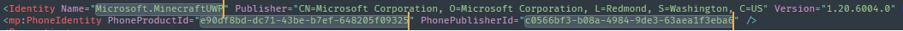
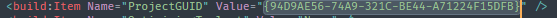

open MinecraftUWPCloner.bat we will see:

e.g. d:\mctest
then, we will see:

then, we will enable UWP dev mode
if u enabled, just skip this step
then, we will modify AppxManifest.xml
 
we need to modfiy these things:
Identity Name
e.g.XiaozhiSans.MinecraftCloneUWPPhoneProductId
get new uuid-v4 at herePhonePublisherId
dittoProjectGUID
get new guid at here
maybe no need to modify
then press Ctrl + S to save changes
then, we will install Minecraft Clone
just wait for Minecraft Clone install successful